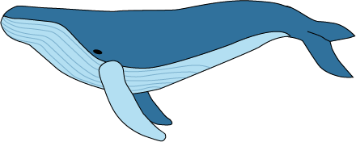

Het leven in de oceaan is nauwelijks in kaart gebracht. En de beste manier om dat te doen is niet door te kijken, maar door te luisteren, stelt bioloog Hans Slabbekoorn.
De oceaan lijkt misschien op een grote blauwe vlakte, een oase van rust. Maar eenmaal onder water is die rust ver te zoeken. Het bruist er niet alleen van scholen vissen, grote zoogdieren, algen, en krabben, ook de aanwezigheid van de mens is tot diep op de zeebodem te horen. Ga maar na. Duizenden vrachtschepen die elke dag de oceaan overvaren. Olieplatforms van vijftig bij vijftig meter, waar 24 uur per dag olie via grote pijpen wordt opgepompt. Grote windmolenparken die als tapijt over de oceaan worden uitgespreid.
En dat is zorgwekkend, stelt bioloog Hans Slabbekoorn . Voor het leven in de oceaan. Maar dat niet alleen. Het verstoren van die blauwe bak vol leven door de mens vormt ook een directe bedreiging voor de mens. Want de oceaan, dat is de controlekamer van de aarde. De temperatuur en de neerslag op land worden grotendeels bepaald in de ecosystemen van de oceanen. Die staan onder druk door overbevissing, chemische verontreiniging en de opwarming van de aarde. En er is nog een oorzaak waar je zelden iets over hoort: meer en meer menselijk geluid.

Lawaai dat wordt geproduceerd door scheepvaart is wereldwijd de grootste oorzaak van geluidsoverlast onderwater. Dit vormt een ernstige bedreiging voor walvissen, dolfijnen en bruinvissen omdat zij gebruik maken van sonar.
Op baleinwalvissen heeft menselijk lawaai een heftig effect, zegt Slabbekoorn. Ze maken lage geluiden en dat doen containerschepen ook. Decennia geleden konden deze dieren nog over duizenden kilometers communiceren, maar door schepen die gebruikmaken van sonar om te navigeren, horen de walvissen elkaar amper meer. Tegenwoordig kunnen ze nog ‘maar’ communiceren over een afstand van tien kilometer.
